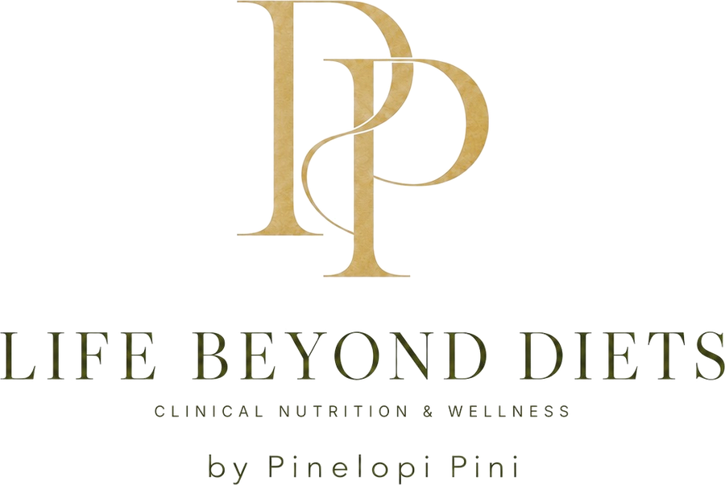

“I lose weight and put it back on.”
A strict diet lasts only as long as your willpower does. When it ends, you go back to the same habits and the weight comes back.

You learn to eat well, to care for yourself through food and to build a relationship with it that lasts. No weighing portions, no diet stress.
A strict diet lasts only as long as your willpower does. When it ends, you go back to the same habits and the weight comes back.
You count, you deprive yourself, you try. And still nothing. Because sometimes the obstacle isn’t calories, but something the diet never looked at.
Food has become a battlefield: good or bad, allowed or forbidden. And every “slip” brings guilt and a fresh start, again.
It isn’t your willpower. The problem that troubles you has a cause, and it usually lies in your food choices and possibly in a metabolic disorder.
Insulin, the gut microbiome, stress, sleep, how and why you eat. All of these affect your body. Together we find out what is happening in your body and why, so that change makes sense and lasts.
I don’t give you a plan to “endure”. I teach you how to eat, so you never need a diet again.
We focus on what you eat, not how much you eat. Real food that nourishes and satisfies.
You learn to listen to your body, your hunger and fullness, and to eat without guilt.
I explain what is happening and why. When you know the reason, your choices become your own conscious choices. Not someone else’s rules.
Small, steady steps that fit into your life, your work, the family table and your holidays.
Stable blood sugar and energy through the right choices, not through deprivation.
If you want to lose weight, we do it by caring for your body, not fighting it.
You eat enough, and well, while on treatment, and build habits for afterwards.
You learn when you eat from hunger and when from emotion, and what you really need.
We find what upsets your gut and build a way of eating that brings relief.
Nutritional support that complements your treatment and cares for your whole body.
We talk about you: your history, your test results, your daily life and your relationship with food.
Together we find how your food choices connect to what concerns you.
Step by step, with guidance and ongoing support, until the new habits become part of you and your choice.
I’m Penelope Pini, a Clinical Dietitian – Nutritionist with many years of experience working alongside a doctor on metabolic disorders and Irritable Bowel Syndrome.
I have seen again and again how exhausting classic diets are and how briefly their results last. That’s why I work differently. I explain what is happening in your body and help food become a source of care, not stress. I inspire and motivate you to look after yourself every day.
“Good nutrition is not a punishment. It is the most everyday way to take care of yourself.”
Book a first session. We’ll talk about you, what concerns you and how I can help.
Book an appointment